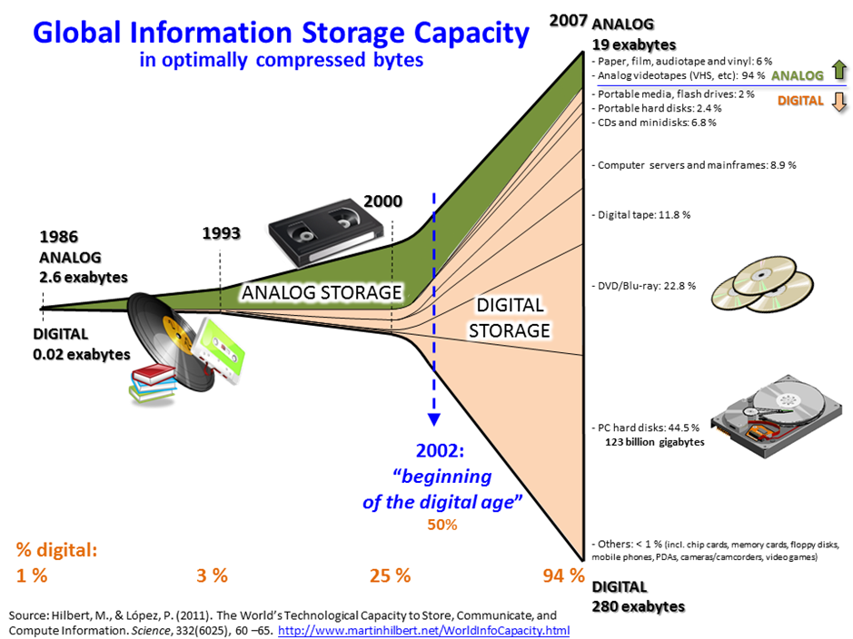
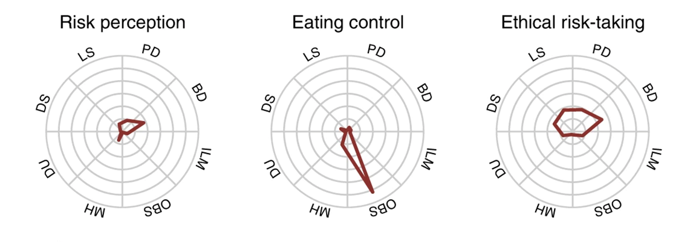
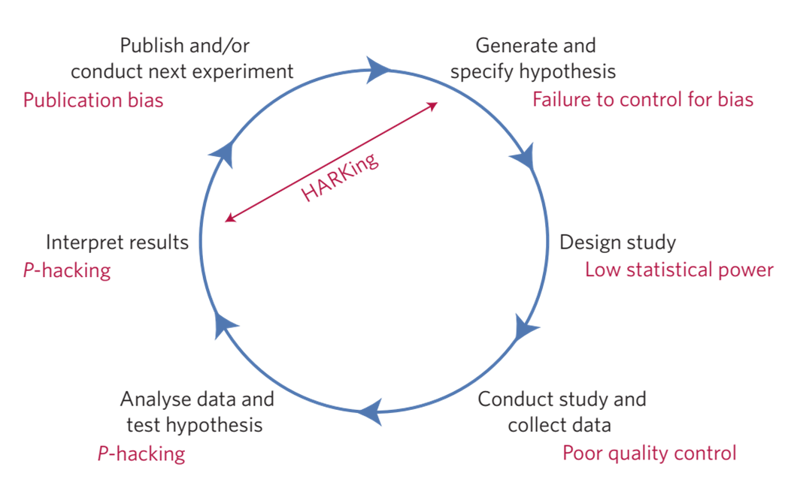
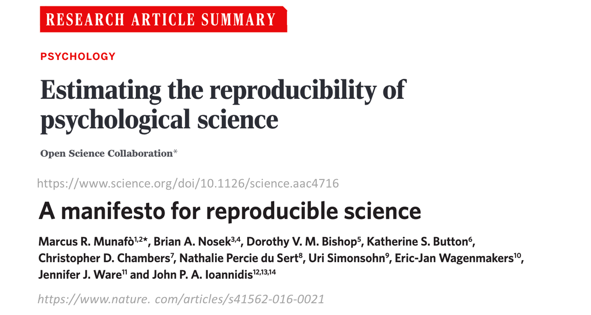
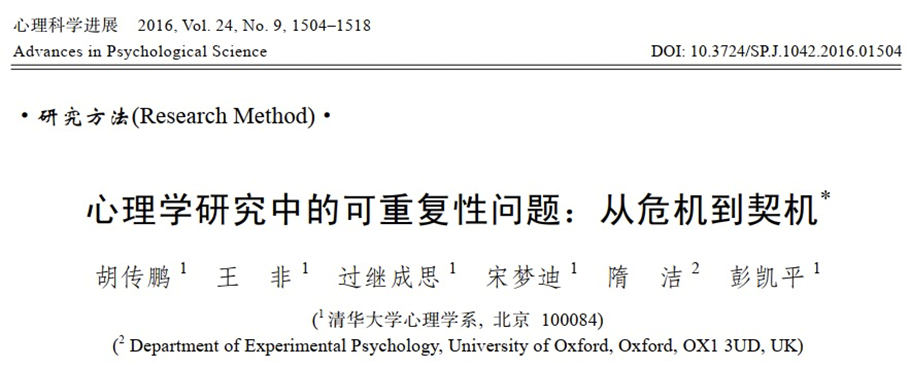

Chapter 1 第一讲：为什么要学习R
序
本课程主要面向心理学及相关学科背景的学生，包括教育学、社会学等相近领域的同学。今天第一堂课旨在让同学们了解这门课程的性质，判断它是否适合自己。虽然R语言编程语言非常有趣，但它并不一定适合所有人。有同学上完课后，处理数据时仍然回到SPSS，说明本课程对TA来说没有太大意义。只是因为学分而选择这门课，是没有必要的。这个时间可以用来做更有意义的事情。
本课程的学习中，你可能会有一些情绪上的起伏，因为本课与心理学通常学习知识的方式不同。作为与编程相关的技能学习，需要我们改变思考问题的方式。所以如果不打算使用R语言进行数据分析，不改变分析数据的思维方式，也是没有必学习本课的。当然，我还是希望通过这门课程让大家看到R语言的价值，相信经历情绪的起伏是有值得的。
开设本课的另一个动机是希望大家更多地使用开源软件，放弃闭源的商业软件，尤其是在国内存在盗版泛滥的背景下。我希望学习本课程可以帮你逐渐转向使用开源软件。现在学习R语言比几年前更加轻松，因为现在有很多在线资料和代码可以参考。在学习这门课程的过程中，你就会接触到不少代码，这些代码可以直接应用于分析心理学领域的数据分析。
我们这节课的主要目的在于帮助大家了解本课程的基本情况，为本课程做好心理准备。接下来，我会介绍这门课程的大背景、课程的内容是什么、需要做什么样的准备以及能收获什么。
1.1 R在心理科学及社会科学中的运用
1.1.1 数据科学
这门课的开设有时代的大背景。作为在心理学院的课程，我们将这门课称为《R语言在心理学研究当中的应用》。但实际上，R语言是当前数据科学（data science）中主流的计算机语言之一。正是数据科学在各种学科中的渗透和普及，让我们开设这门课程显得非常重要。那么什么是data science呢？
数据科学是什么？
对科学历史进行回顾会发现，科学的革命经过了几次范式转换（参考链接）。最早期的是”实验”科学，研究者通过设计和完成实验，一个一个地去检验假设。随后是理论科学，在实验基础上进行归纳。随着计算机越来越发达，我们进入了”计算”时代，通过用各种计算模型模拟的方法，帮助我们去理解世界。但是现在，随着数据越来越多，通过数据驱动的方式就能发现很多新的东西。最近这些年，很多在科技领域尤其是在计算机领域取得的重大突破和进展，都多少与大数据有关。也就是通过对数据进行“提炼”从而得到新的发现。比如，说2023年初非常火的ChatGPT。作为现在全球最火的科技界产品之一，它背后的模型被叫做LLM，Large Language Model，就是一个大语言模型，它所依靠的就是大量语言材料的训练。
数据科学的内容
大概10多年前，数据科学就已经出现。数据科学里面既涉及到计算机编程，也包括数理统计。当讨论具体应用领域的数据科学，比如心理学的科研领域，数据科学也需要domain-specific的知识，也就是这个领域的特殊性知识。
[此处插入关于数据科学的Venn图]
这意味着什么？ 意味着如果你仅仅懂计算机，那你不一定能被称为data scientist；如果你仅仅是懂数学和统计，那也不意味这你能解决一个data science的问题。必须要将计算、统计和领域特殊的知识进行结合。在心理学研究中，这对研究生提出一个新的要求。
1.1.2 数据科学的诞生——数字化时代
为什么会有data science？ 大家应该能直观地感受到：随着个人电脑的普及，互联网越来越发达，整个社会所产生的数据呈现爆炸式的增长。下图是一个可视化的例子。我们可以看到，在计算机出现之前人类产生的数据是非常少的，而计算机出现之后产生的数据越来越多。

我们也越来越多地使用个人电子设备，它们产生的数据是非常大的。这个图片相信很多人在朋友圈都被刷屏过。这是人类所能观察到的一个划时代的新的图像，尽管我们作为外行可能不知道它具体的内涵是什么，但是都知道它很酷，但这个图像的产生，本身依赖于天文望远镜大量观测的数据。

我国是互联网普及最高的国家之一，我们现在有百分之七十四（可能现在有更多了）的人都接入互联网。这么多的人接入到互联网，所产生的数据可想而知，一定是海量的。所以现在我们很多电商，像淘宝这样的各类购物平台，它们在中国做的是非常好的，这也得益于海量的数据。包括拼多多，听说其在美国势如破竹，可能也离不开先前根据少量数据得到的技能。还有像TikTok，海外版的字节跳动，它的特点在于非常好地利用了中国大量的网民产生的海量数据，不断地进行迭代。所以当它能出海的时候，去给海外的用户提供的服务是非常成熟的。

数字化对心理学研究的影响
近年来，随着人工智能的兴起，数据科学变得越来越重要。我们生活在大数据时代，心理学或心理科学也在这个时代中发展起来。我们收集的数据越来越多，我们的生活方式也在逐渐数字化。因此，数字化成为了新时代的重要组成部分。在数字化时代，心理学不可避免地会受到数据化的影响。
其实很早就有人关注数字化我们心理学的影响了，国内的研究者也经常会提到心理学和大数据。我们这里做一个不完全的概括，主要是这三个方面的显著变化。
Big n (sample size)
首先是样本量很大。现在的数字化平台生产的数据非常大。我们传统的行为学实验可能只有几十、几百人的数据，上千已经是很不错的了，上万就比较费劲了。但是如果说我们能从互联网上抓取数据的话，那动辄就是上万甚至是百万级别的。例如，与企业合作或者使用可穿戴设备，我们可以收集到大量的心理健康数据，这已经超越了传统心理学研究的范畴。
Big v (variables)
其次，我们现在面对的数据不仅仅是数量上的增加，还有数据维度的增加。以前我们可能只关注反应时间和准确率等少数几个变量，但现在我们可能需要处理大量的参数，比如个人的购物记录、聊天记录、身体活动数据等。比如我们使用手机，那其实我们产生了非常多的数据。你一天使用多久、点击多少次、点击了什么、在哪个地方、用的是什么APP，甚至包括你所处的地址，你在地球上的经纬度、当地的气温、湿度这些数据信息。这些数据的维度非常多，每个变量都可能对我们的研究产生影响。
Big t (time)
还有就是时间的跨度比较长。现在很多的APP，一旦用户开始使用之后就会长期使用。如果能用于收集心理学的数据，就可以在很长的一段时间里记录很多的数据(Experience Sampling Method, ESM, or Ecological Momentary Assessment, EMA)。我们现在有新的研究设备，比如通过手机APP不断追踪个体的心理状态，可能一天收集五六次，连续追踪一个月，这样能收集到大量的数据。这些数据为我们提供了新的挑战，我们需要新的方法来处理这些数据。
这对于了解人类的心理和行为的规律来说，其实是一件非常好的事情。对于发展心理学家来说，有这样的一个例子：有一个做语言发展的一个研究者他从自己的孩子出生开始就一直用视频记录孩子的成长（见science最近的文章）。儿童产生语言目前对于人类来说还是一个不能够完全理解的过程，从语言学上看这是一个很大的跳跃。这位研究者完全记录了孩子生长的过程，积累了大量的数据，并通过对视频数据的全方位分析，得到了以前心理语言学比较少能够得到的东西。
数字化时代的心理学研究
这里有几个例子。比如下面这个是利用网络数据预测人格，这里的纵轴就是人格的类型，不同的颜色表示使用不同的方法进行预测，横轴是相关系数。可以发现说手机里的一些数据和人格的倾向是密切相关的。

另外，像我们心理学的顶刊Psychological Science，上面也不定期的有研究是探索我们在数字世界中留下的痕迹与行为之间的关系。比如，这篇文章发现我们个体在使用手机的行为上是非常的一致的。研究者通过大量的数据是得到了比较强的结论，尽管这个结论比较简单，但是基于数据量比较大，是比较有说服力。

我们也可以利用互联网的平台来收集行为的数据。传统上我们是把被试带到实验室做实验，但现在由于互联网的发达，我们可以进行线上实验。在疫情期间，不少同学可能尝试过JsPsych或者Pavlovia这样的平台，把实验编写好放在网上，并通过链接给被试发放被试费。这样我们在短时间内可以收到比传统实验室更多的数据。同时，因为我们使用的其实还是传统的实验任务，只要事先验证过在线的实验和实验室实验的可比性，就可以利用互联网在线去收集更大量的数据来研究我们感兴趣的问题。
比如这里列举的实验(Eisenberg et al., 2019)，去年的R课上我们以此作为了示例。它就是通过在线的平台收集的数据，收集到了很多变量。它的研究一个目的是为了探测self regulation，自我控制或自我调节，不同的测量方法是不是一致的，哪一个能更好地预测生活中的一些行为，比方说这里就是看哪一些与饮食控制有更强的相关。

数字化时代心理学研究方式的变化
数字化时代不仅给心理学提供了新数据，实际上也变革了我们做研究的方式。比如合作。在疫情以前，研究者建立国际合作主要是通过导师的联系、讲座或是开会时建立联系。但在疫情期间，因为大家都困在家里同时又都使用很发达的互联网，所以就有研究者直接在社交媒体上发起合作的倡议。有的人可能说，我有个想法需要在不同国家收数据，想要有人和我一起收集数据，最后可以一起发表文章，有没有人愿意加入？通常会有不少合作者加入。在疫情期间很多研究就是这么展开的，且因为这样的研究往往样本量比较大，也能发到很好的期刊上去。同时，除了个人发起的项目外，研究者们也成立了更多的学术组织，比方说Psychological Science Accelerator (心理科学加速器)，这个组织就是专门组织在全球范围通过互联网进行合作研究。
另一方面，以前研究者需要去线下开会或者是参加工作坊，现在即便是疫情过去了，大家还是越来越习惯和更多地采用在线的方式进行学术讲座或是工作坊。
1.1.3 为什么要学习R语言？{1-why-learn-R}
上面说的是为什么要学习编辑，使用编程语言来解决少量数据的问题。接下来，我总结一些我们学习R语言或者说学习R，而不是Matlab或python的理由。
首先，R语言是一个开源软件，它跟Python、Julia一样，基本绝大部分的基于R语言的工具都是开源的免费的，也说你基本上都能够（只要你的互联网是畅通的话）免费得到所有的内容。
第二，它是一个高级的语言，不需要和计算机的硬件直接进行交流，和我们日常的英语差不多。
第三，它有一个强大的community。我们在选择工具时，不仅要考虑工具本身的功能，还要考虑使用这个工具的社区和支持。因为一个好的社区可以提供大量的资源和经验，帮助我们更好地使用这个工具。因为现在的所有的开源的语言，它依赖于有多少人在使用它、有多少人在不断的进行开发，尤其是谁在开发这些新的东西。对于我们心理学或者是社会科学而言，绝大部分是使用R做数据分析。简单来讲，我们一开始作为新手肯定不会去开发什么工具的，就必须要把别人开发的工具拿过来。那谁为我们开发呢？肯定是这个community里的人，这就需要我们有一个比较成熟和强大的社区。而R语言本身就是由统计学家所开发的，所以它就是为了做数据分析而生的一门语言。同时，在这么多年的发展当中有大量的研究者，尤其是社会科学的研究者不断加入这个community，从初学者变成使用者最后变成开发者。
从做研究的角度来说，R可以在这三个方面提供强大的支持。
科学性
使用R有助于增强计算的可重复性。如果我们能够精确地重复我们的分析，并且得到相同的结果，那么我们的研究就更加可信。在讨论心理学研究的可重复性时，我们发现即使是有了公开的数据和代码，也很难保证研究的精确重复。最近的一个研究发现，在14篇文章中，只有一篇能够完全精确地重复出来。这表明我们在数据分析的过程中，很多微小的步骤如果没有被完整记录下来，就很难保证研究的可重复性。为了解决这个问题，现在越来越多的人鼓励使用编程语言，如R语言，来记录数据分析的每一步。这样，我们可以从原始数据开始，记录下所有的数据处理步骤，从而确保研究的可重复性。例如，我与合作者2020年发表的一篇文章中，我们公开了所有的数据和代码，并且有小组检查了这些数据和代码，发现能够得到与我们报告中大致相同的结果。
R生态中有大量的统计方法。IJzerman等(2018, Collabra: Psychology)这篇论文（我是合作者之一）就是一个例子.当时我们通过互联网合作收集数据。Hans IJzerman使用了机器学习的方法——（条件）随机森林（conditional random forest）。这个方法是在机器学习中常见的一个方法，它的特点是在数据较少时也能够得到比较稳健的结果。当然这里小数据是相对于计算机领域的数据来说是小的，因为他们可能动则就是十万百万的数据。当时拿到这1,000多人的数据后，Hans想去探索在我们测量的这么多变量中，到底有哪些变量能够稳定地预测核心体温，所以采用了随机森林的方法，最后我们发现最关心的那个变量——社交网络的复杂程度——确实能够预测体温。

R生态中有比传统方法更合适的方法。比方说我们认知实验当中常需要分析反应时间(reaction times, RT)。RT数据基本上都是偏态的分布，对于这种偏态分布的数据应该采用什么统计模型？传统的线性模型还是广义的线性模型。在R语言中，我们可以很灵活的使用一些更灵活的回归模型的工具包。在这些包里面，可以在广义线性模型(generalized linear model, GLM)的框架下选择更适合RT分布的模型。我们甚至可以通过模型比较的方法找到哪一个模型是最适合的。正是因为R语言有强大的community和更多可能的工具包，为我们提供了多种选项。这样我们就能够不仅仅是使用新的方法，它也可以帮助不断选出更加适合的方法。

美观
R语言提供了强大的绘图功能，便于调整细节，可以帮助我们在数据分析的每个阶段进行可视化。如ggplot2，它允许用户调整图表的每一个细节，以更直观、美观的方式展示数据。 我们后面会讲可视化的进阶，那一章的时候我们会把ggplot这个最常见的画图软件里面的每一个细节都掰开讲，这里我们只是稍微展示一下。我们可以把原始数据和group level数据结合到一起，然后再把每个被试的数据，把它的分布画出来。

最近几年非常流行的雨云图。当然我们还可以把多个（图）进行叠加，像这种被试类的实验设计我们可以把每个点都连到一起，可以看到在不同之间的一个变化，它是不是完全具有一致性的。然后我们把把这个box plot也加上去，这样的话我们能够看到极端点。我们同时还把这个分布加上去，当然这个分布目前的α值比较高，我们还可以把它调的低一点，就是说让他透明度再低一点，让我们看到这个分布之间的一个叠加。这样我们就可以在一个图上看到非常丰富的信息。


当然还有一个叫做ggridges的一个图，这个上面我们不仅仅看到可视化的效果，还可以直接把值标到上面。这样一个图给我们的信息量就非常大，当然在画图的时候我们不是单纯的追求这个信息量很大，我们要美观。要有足够的信息量同时也能够让大家不会一看到之后就不想看了，而是说看到之后能够立刻get到你想要传达一个什么样的想法，这个是很重要的。所以可视化这一点上面说实话我们即便在这个课上有两次课，但是我们只能教大家一些方法，大家最后画图的实际效果要依赖自己的taste，就是自己的一个口味和不断提升的感觉。

我们也可以画地图。我们可以把一些相关的数据在地图上进行映射，随着我们越来越多的能够得到不同地区的数据，把这些数据映射到地图上的时候，我们就会发现很有价值的信息。这个图是我最近画的一个图，就是我们在分析大团队科学中的样本被试到底是不是真的具有代表性(https://doi.org/10.1038/s41562-024-01902-y)。因为很多做这种就是跨国的研究的研究者总是会claim我们的这个研究从几十个国家来的，那么这个数据是能够推广到全人类的。是不是真的如此呢？我们看一下被试在我们这个图当中（的位置），我们就这边是中国的人口的一个（分布）那边就是他的那个被试的群体在不同省份的一个分布图，我们可以看到其实他选取的样本主要就集中在这两个地方，一个是广西一个是上海，其他地方的话其实数据量非常少。

当然我们还可以从其他的维度对他的样本代表性分析，这里主要是展示我们可以把数据映射到地图上面，这样一眼就看到他的数据到底行不行。现在把数据映射到地图上是越来越多的使用在心理学的理念当中。
实用性
R的实用性之一：适用于数据分析的各个阶段。首先，几乎科研每个阶段中涉及到的数据处理，均有对应的R包：计算样本量、读取数据、清理数据、处理缺失值、可视化、统计分析、生成PDF、甚至生成PPT。当然要掌握这里面的每一个流程的话其实是要花很多时间的，但是呢我们可以找到一个对心理学研究者来说最快的（方式）。比方说我们这个课上就会把整个过程中所有心理学的数据整个演示一遍。大家就可以照着这个流程去走，就不需要再去重新探索，这是我们这门课的意义。
此外，R语言还支持将数据处理和分析过程自动化，从而直接生成报告或演示文稿，甚至建个人网站。这意味着从原始数据到最终结果的展示，都可以通过R语言来完成。

R的实用性之二：适应数字化时代的需求。我们现在越来越多的大的数据，所以我们要使用一些更加fashion的一些方法，机器学习、深度学习什么的。那么r语言现在已经有很多这种框架了，如果我们能够掌握r的知识以后我们后面去拓展到这些部分相对来说是容易的。因为里面已经有一些比较成熟的框架。那么就像我们能够调用Tidyverse，我们同样也能够去调用这些机器学习的包，只不过我们要真正的合理的使用还是需要去了解了解背后的一些知识，不能盲目的使用R语言。
R的实用性之三：代码复用。一旦你编写了一段处理数据的代码，你可以轻松地在不同的数据集上重复使用这段代码，只需要对代码进行少量的修改。这大大提高了工作效率，特别是当你需要处理大量数据时。
R的实用性之四：强大的社区、众多的教程。我们选择R而不是Python的原因之一就是，更多的心理学研究者在使用R。我们有一个非常强大的社区。意味着有很多人教你做各种各样的事情，也就是说你如果你想做什么东西，99.9%的情况下你不需要自己去真的去从原理到到实现全部实现全部去做一遍。而是去搜索前人是怎么解决的。比如说你要就要做meta analysis你就搜索meta analysis视频，然后你能得到很多的教程，这时候你就去找一个好的教程就可以了。或者比方说我们要做混合线性模型，你就搜索一下肯定又会得到很多教程。
1.1.3.1 心理学的可重复性危机
在我们心理学领域从2011年开始出现了一个比较大的问题，就是可重复性的问题。大量发表的研究的结果无法被其他的研究者独立重复。那这个问题到底有多严重呢？最有代表性的应该就是这篇文章。在2015年的时候，一篇Science的文章专门报道了整个心理学领域的可重复性的问题。Science是跨领域的多学科的一个综合的期刊，能够发表到Science这个期刊的文章都是能够引起广泛的兴趣的，也是对整个科学界来说都很重要的。在这个文章中当中100个团队重复了2008年发表在心理学顶刊上的100个研究。他们的分析的发现大概只有36%的结果是能够被重复出来的。2015年这个结果是引起了非常大的震撼也被Nature评价为2015年的年度的十大重要的论文之一。因为这个问题出现，研究者就做了很多的反思。当然我也是被这个问题所深深的震撼，现在还是在一直在寻求能够去做到更加严谨、可重复的透明的这种研究。这个是我在2016年的时候跟我们课题组的同学一起写的一篇对可重复性问题的一个介绍和思考，大家有兴趣的话可以看一下。


我这里没有去把这些心理学的计算上可重复的研究拿过来，有人对心理科学在Science这个期刊上面有公开数据的文章进行了计算的可重复性的检验，也就是说按照研究者描述的方法去做一遍分析，看能不能得到跟研究者一模一样的结果。大家猜一下这个比例大概有多高。做一个区间吧30%以下、30%到50%、50%到80%、还是80%到百分之百。约为30%以下的举手，30%-50%呢，50%到80%呢。大家都很乐观啊，80%我就不问了吧。如果说我们考虑完全能够重复的话，他们在14篇文章里面只有1篇能够重复，是1篇还是2篇能够完全重复。然后有的是在作者的协助之下都得不到原来的结果，所以这个问题并没有那么简单。
1.1.3.2 利用R语言增强计算的可重复性
既然有这么大的一个问题，那么为什么说R语言可以帮助我们解决计算的可重复性呢？首先是说可重复性是有多个层面的。大家可以可以想一下，如果说你的这个结果是可以重复的，那么最简单的一个可重复是什么？就是计算的可重复性(Computational reproducibility)，这个computation reproducibility说的是什么？假如你有一个数据，然后你做了一套分析，你把它报告出来了，我拿到你这个数据，我按照你描述的方法，我能不能得到跟你一模一样的结果。假如说你的计算的过程当中，没有一些随机的生成的过程，全部都是说我们用的这种可以求到解析解的这种这种算法的话，那就意味着我不仅仅要跟你的结论是一致的，而且是在数值上应该是一模一样的。你原来得到比方说t = 2.1，那我应该也得到就是t=2.1，或者你得到的是F = 10，我应该也得到F = 10，不然就说明什么计算上是不可重复的。
1.1.3.2.1 记录数据分析的全过程
所以我们实际上按照传统的做数据分析的方法，都是用手动点击实现分析的对吧，尤其是前面那一部分。我们不是说你把数据录入到SPSS是以后的那部分，（说的是）比方说你用你在问卷上面，用问卷星收一批问卷，那里面可能有一些不太认真的吧，你要把它给删除掉对吧？有可能你会删除一些你认为是比较极端的也确实可能是极端的数据对吧？有可能你就是100个人里面或者是300个人里面你把某一两个（极端数据）你当时看到你就删除掉了，然后你最后认为你得到了一个干净的数据，你把它存起来以final或者是以最终数据作为后缀对吧，然后你就会基于那个数据把它打到SPSS里面对吧。但是如果说你要重复的话从前面到你那个最终数据你能够（重复出来吗？）可能一个月之后你就不一定记得为什么你删除某个数据了。那么这是很普遍的一个（原因）导致我们最后结果无法得到（重复结果）。如果我们用R语言编程语言来记录数据分析流程的话，就可以把我们整个数据分析的过程全部记录下来，也就说任何一个步骤出错了我们都可以找到，因为我们代码全部在那里。
我们这门课会从原始数据出发，从数据的预处理到后续的统计分析。我们会展示如何把每一个步骤都用代码记录下来，这样一个好处就是即便过了一两年之后，即便我们已完全忘记了当时是怎么处理的，但是代码还是可以告诉我们当时怎么做的，这一点就可以帮助我们去保证计算的可重复性。
1.1.3.2.2 跨机器的一致结果
另外一点，可以帮助我们达到跨系统或者是跨机器的结果。这个其实是在我们心理学的数据当中比如行为学的数据当中是不是很大的问题。为什么呢？因为我们行为数据的处理涉及到的步骤很少，即便里面包括一些随机化的过程，他的错误不会累积和放大。但是如果你们要去处理一些分析流程更长的一些数据，比方说像fMRI的数据，那么你在不同的机器之间的随机性或者浮点数据导致的这个差异，他就会随着你研究的步骤慢慢积累起来，也就是说即便你的这个系统刚开始的时候输了原始数据。经过了不同的系统不同的机器有不同的随机的非常微小的差异，经过一段时间之后也会累积成为很大的一个差异。我们后面会讲如何控制这种随机性导致的这个结果，如果我们使用比较好的使用包括像pandas？或其他的一些软件，我们实际上是能够达到某种程度上跨机器的一致性的。当然到了一个精度非常高的程度的话，其实就不是我们心理学家能够解决的问题，因为他涉及到一些计算机内部如何去控制浮点的精确度等一些技术细节的问题。但是我们可以怎么样呢？当我们学习了这些编程语言之后，我们能够去把计算机科学家在这方面做的改进纳入到我们的分析当中从而去改进我们自己的分析的结果。
我自己有一个切身体会：我们2020年的文章中公开了数据。但是分享的数据跟文章中的统计结果稍有不一致，一位读者给我发邮件指出了这个问题。经过反复的追溯后找到了原因：我们曾经用Excel进行数据预处理，在Excel中不小心删除几行数据，导致这些数据与文章中分析所基于的数据不同。如果我们用R做全部的数据分析，应该不会出现这个问题。从这个角度来讲，R可以记录数据分析的全过程，避免手动的错误。
另一个例子来自我们2020年另外一篇文章。我们的数据和代码全部是公开的，有一个叫reprohack的团队正在对已经发表结果的可重复性进行评估。他们选择了我们这个数据和代码进行了一次重复，做完之后他们给我进行了反馈：绝大部分能够重复出来的，但是有一部分没办法，因为他安装不了HDDM这个python包。这并不是一个小问题。我们后面为了解决HDDM的计算环境的可重复性问题，花好几年的时间把HDDM打到docker里(e.g., dockerHDDM)。这个问题其实非常直接：如果你发表一篇文章，但别人连你用的软件都装不上，如何能验证这个结果的可重复性？HDDM是用python写的，安装存在困难，无法被验证。但我们2020年这个文章公开代码的R语言部分，注释非常完善，reprohack团队能够很好地理解我们的代码并重复。大家如果能够比较规范地写自己的r代码，同行的反应也是可能是类似的，他会发现公开的内容结构非常清晰，代码注释也清晰易懂，很快就知道你在干什么，也就很快能重复你结果。某种程度上，你保证了自己结果的靠谱程度。
1.2 R语言使用的示例展示
我们已经讲完了第一部分关于为什么要学习的内容，希望大家在听完后仍然能够有学习的动力。接下来，我们将简单展示一些使用R语言的代表性情况。你现在看到的是其中最具代表性的情况之一，即遇到错误的情况。例如，在使用R语言时，实际上碰到错误的概率几乎是百分之百的，而即使你非常熟练，仍然可能出现很低级的错误，比如漏掉一个字符或者反引号。我们将在之后讲到数据类型时介绍不同数据类型需要对应的一些符号。
1.2.1 数据清洗
在数据清洗方面，我们一般会使用dplyr， 它是Data science里面非常常用的一个包，需要进行各种数据转换、分组等等操作。但是数据清洗通常是数据分析中耗时最长的一个过程，即使是简单的数据也需要花费相对较长的时间进行清洗。虽然在使用SPSS的过程中，我们已经形成了一个非常快速的数据分析思维，但是在使用计算机语言进行数据分析时，这个过程完全不同，需要花费大量时间进行数据清洗。即使是行为学数据，甚至是简单的反应时数据，也需要进行相对较长时间的数据清洗。
这里面可能有几个图没有截过来，在数据科学中，无论你从事哪个领域，完成一个数据分析项目的时间通常会包括从数据清洗到最终分析以及报告撰写。其中，数据清洗通常会占用至少60%的时间，这个过程可能需要反复查看和修改。传统的做研究的方式并不习惯分享数据，因为整理和清洗数据需要很长时间。即使你的文章已经发表，清洗数据所花费的时间也可能会被认为是浪费的，尽管有时会带来间接的回报，如其他人可能会重新使用你的数据或发现你的分析的可重复性很高。
1.2.2 ggplot2画图
另一个耗时的任务是画图，尽管这些图看起来很漂亮，但需要不断地调整和修改。有时，研究者会花很长时间去完美地绘制图表，而这些时间可以用来完成其他任务。经常会有研究在这个社交媒体上，他自己比方说做统计分析发了一分钟，然后画图画了两天的时间，就是不断的去调，并不是他不会画图，而是他总是觉得画出来这个图不满意，然后就不断的调整，不断调整最后发现，时间就没了，并且呢你也会发现呢，就是当你掌握了不同的这个，画图的这个方法以后呢你会不断的去想，我能不能找到一个更合适的方法，去对他进行更好的一个可视化，我没有来得及把我自己之前的一个画的图的这个历程贴上去，我刚开始就是最简单的这个，跟我们在，Excel里面画的那个图是一样的，就是一个直方图上面加一个error bar，这是我一开始用来画的用APA的格式，后来就变成那个带散点的，再后来变成了那个raincloud，然后就是raincloud加box，然后加这个distribution，然后最后又回到了这个散点的，加上这个主题，就是groups这些。所以其实这个画图的时间需要大家当你熟练了以后也需要适可而止，差不多能够传达你的这个信息就可以停止了，要不然的话，这个画图的提高是没有止境的，有的也可能可以看有的时候也看到，就比方说一些好的期刊，比如像经济学人他们涉及到数据的时候，像比方说， 我们说Nature、Science或PNAS对吧，Nature Communications，当他们涉及到数据的图的时候，都是非常漂亮的，包括他们配色包括的比例各方面，他实际上都是经过专业的人士进行调试的。那么有的时候其实我们要想要达到这个类似的效果的话，也需要花很长的时间去做这些细节的工作。但假如我们只是按照心理学传统的做法，Excel的那种一个bar图加一个error bar的那种非常快基本上几行代码就可以搞定。
1.2.3 心理学数据分析与结果汇报
针对于各种各样学科、心理学的这个数据的分析的包，也有心理学的研究者开发的包，例如包寒吴霜老师的BruceR包，该包专门针对心理学数据分析，并包含很多有用的功能，非常适合心理学学生使用。例如，对于做T检验的研究，可以使用该包的功能，我们可以用他的这个T-test对吧,它可以将结果输出成为一个简单的三线表格，并且可以直接在命令中加入指令将结果输出成为一个Word文档。这个word文档里面就有这么一个表。你就可以直接复制打开到你的文档里面，这个是非简单的。他也告诉你，你的零假设是什么，我们这个是单样本的t检验，那么他告诉你这个假设就是双侧的，然后这个叫做均值，他不等于700，那么类似的可能我们还有其他的，比方说我们用这种配对样本t检验对吧，他同样的也可以得到这种非常适合我们输出的这个结果，而且他最近把Bayes factor打包进去了，所以我们大家可以看到这里报告的信息肯定是比SPSS更加全面的。
1.3 现场运行代码
在今天的课程中，我们向大家展示了一段R语言代码。我之前在公众号或群组中提到过，所有的课件都会放在github同一个地方，供大家查看。比如，我最近在一个小时前更新的内容，包括第一节课的PPT。我通常会在上课前更新课件，以确保大家能够获取最新的信息。
去年的课程PPT，也就是2023年的课堂PPT，已经不再使用。虽然这些代码和PPT可能仍然有用，但与我们的课程配套的内容是我们当前每次课的课件，大家可以自己下载最新的课件。我刚才展示了一个简单的rmd，让大家看到如何进行简单的展示。如果你已经下载了，可以直接打开并查看。
我使用的电脑是我的助教提供的。在课程开始前，很多人还没有安装课件和代码，但我通过一个工具，将代码和课件下载到另一台电脑上，并成功打开。通过这个工具，我们可以看到各种信息，包括代码和文字信息。这些信息和代码可以混合编写，最终可以生成一个可以直接在电脑上运行的演示文稿。
在运行中，可能会遇到一些问题，比如某些包未安装。需要注意的是，R中的很多包看似独立，但实际上是基于其他包构建的。这意味着你需要安装所有依赖的包才能正常使用。特定的R包甚至可以帮助我们按照特定的排版格式生成符合学术标准的论文排版，符合一些学术杂志的要求。这个工具可以处理很多细节，比如作者信息、摘要、关键词、材料和方法等部分。你可以编写所有的细节，包括实验设计和数据处理过程。通过这种方式，我们可以确保我们的文档既符合学术标准，又能以一种清晰、易于理解的方式展示我们的研究内容和数据分析过程。
1.4 课程安排
本课程的教学有三个原则：第一个是即学即用，希望课堂上的代码，大家能够直接在自己的数据分析中使用，不需要再重新学习。复用这些代码可能能够帮助大家节省时间、少走弯路，也能帮助减轻大家的心理负担。
第二个是在做的过程中学习。课堂上会教大家怎么去安装软件，了解R和Rstudio的功能。从数据导入开始，直接讲解各种可能碰到的问题。第二节课以后，我们就开始直接给大家讲解代码。我们需要写代码的过程中学习。
第三个是逆向学习。逆向学习指是先做，能够在代码上实现跑通之后，再去理解。例如，我在课堂上会演示某个命令，比如t-test或F-test，得到某个结果。对于大家来说，首先要在自己的电脑上跑通，或说在云计算平台上面跑通（把这个代码抄下来），得到跟同样的结果。跑通了之后，再去理解函数，这可能是不错的做法。如果你看到一两本书之后，但没有写过几行代码。对于学习R语言来说，是非常的浪费时间的事情。
上面的三个原则，是希望压平学习曲线。以前大家认为R语言的学习曲线是相当陡峭的，刚开始的时候就特别难，门槛很高。我们希望尽量门槛低一点，后面持续地学习。
关于参考教程，英文版可以考虑（Naverro, Learning statistics with R: A tutorial for psychology students and other beginners. (Version0.6.1),https://learningstatisticswithr-bookdown.netlify.app）。中文的话，可以参考王敏杰老师的公开教程《数据科学中的R语言》。大家可以把它当做参考书，因为这个书里面讲到了非常多的知识点。另外一个张敬信老师关于Tidyverse的书(https://www.epubit.com/bookDetails?id=UB7db2c0db9f537)。与我们的课堂的内容契合度是非常高的，因为Tidyverse就是我们最常用的一个工具包。
本课程的内容跟实际的科研实践密切相关，因为本课程是针对研究生的课程，所以我们是希望本课程能与研究中的数据分析密切相关。在数据分析的过程中，需要有完整的流程：从原始数据到清理数据和数据的探索、统计分析，到分析完了之后的推断，再到结果的验证，最后撰写出报告。
可重复性和开放科学是心理学近年来的重大关切点。我们课程后面也将整合一些如何跟他人进行协作、如何保证我们的可重复性、如何采用一些更加先进的计算机技术等。为增加可重复性，我们会提及如何能够直接从数据到PDF或word文档，用代码生成一个直接可以提交论文稿件。
1.4.1 课程大纲
我们不会按照传统的方法介绍R：先介绍R有什么对象，有什么语法规则等，这些都不介绍。我们的做法是简单粗暴的：直接数据拿过来，我们要怎么用，怎么分析；第一步做什么，第二步做什么。从第二章开始，我们介绍软件的安装，这就是数据分析的第一步：假如我们现在有一个数据需要用R语言进行，我们将面临的第一个问题是如何安装R语言。顺便提一下，如果使用的是windows系统，最好把自己的用户名改成英文或是拼音，不推荐使用中文作为用户名，可能无法被R语言识别出来。我们之前碰到过一个问题是：使用中文作用户名的时候，可能没有办法画图。
然后我们会帮助大家解决一些安装中的问题，会介绍安装之后的界面，也会介绍如何更加方便的使用R。如果我们是使用原生态的R的话，早期可能会感觉到特别难用，因为R只是给我们提供了一个引擎，用于计算的一个引擎。我们还要一个写代码的界面，方便我们与这个引擎进行交互。在这个情况下，我们会使用Rstudio这个最广泛的开发环境工具。
接下来，我们介绍Rstudio各个界面及如何开始数据分析。拿到数据后，首先要把数据导入进R。在SPSS里面，大家通常是点击File的下拉菜单进行导入。在R里面呢，我们除了这种方式以外，还有其他的方式。此外，我们也需要进行批量的导入，同时导入多个数据。导入完数据之后，我们才有用来分析的原料。
数据导入后，我们需要认识R里的数据，这会涉及到R里面的对象(objects)。我们会以这个为基础来讲解R里面的各个对象有什么特点。
首先我们要讲解数据和预处理。这个过程有点复杂，我们会分成两次来讲解。我们首先介绍单个对象在R中如何操作。我们会讲解这些对象的特征与在R中对对象进行操作的规则。接下来会介绍一些函数和规则等。接下来我们就可以开始自己的分析了。我们会按照Tidyverse的风格进行基本的操作，这里我们叫介绍管道的操作。在这个过程中，会给大家进行代码的演示。如果没有编程基础的话，这些基础可能会比较难理解，但是大家会在慢慢做的过程逐渐理解和熟悉。
导入了数据后，接下来就可以进行一些探索。看一下数据“长什么样”，它有什么样的模式、特点。猜想我们应该进行什么样的分析。这就是初步了解数据。大家在学习心理统计学和SPSS时，不知道有没有查看过原始数据。我们这里强调，在数据分析时，一定要去看原始数据，不能只看统计指标。这样才能避免让出现一些非常基础的错误。
数据探索包括两个部分。第一个部分是描述，第二个部分是进行一些基础的可视化。所以探索数据包含了我们两个知识点：描述统计和粗糙的可视化。这时的可视化只需要自己看就行，暂时不需要花太多时间把它做的精美。探索了数据后，我们会介绍如何用R语言实现常用的统计分析，将R变成大家的一个工具。在介绍这些常用的统计检验时，我们先展示一下相关的代码，然后介绍分析的流程。
介绍完这些统计检验之后，我们可能会介绍采用多个方法来分析同一批数据，看看得到的结论是否一致，这个称之为Multiverse。最近《心理科学进展》上有一个介绍性的文章，大家有兴趣话可以去看一下。
如果我们只做传统数据分析的话，做完上述的步骤，就结束了。但是完整的数据分析还包括汇报结果。这里要解决的问题是：如何得到一个可发表的图像。这时我们会进一步的介绍如何进行拼图，如何操作图中的每一个元素、如何拼图，以提升美观。接下来，我们会讲文学编程literate programming。也就是如何把R代码和文字进行混合编写到同一个文档。这个文档可以运行，生成的图片直接插到生成的文档中。对于R语言来说，这个工具是Rmarkdown。它在文字部分用LaTex的语法,所以我们会介绍一些最基本的LaTex的语法，帮助大家进行排版，还有公式的撰写等。
到这里，单人进行数据分析的活儿基本上就差不多了。但是，大部分时候大家都不是一个人干活。我们要经常跟他人进行协作，所以后面介绍的是如何跟合作者或导师进行协作。这个部分就涉及到两个知识点：版本控制和在Github上协作。前者对单人干活的情境也适用，因为你可能前后代码有很多迭代，在某次编程中删除的一个功能，后面可能想复用，如果直接删除了这部分代码，找不到了就很麻烦；如果能够找到以前的版本，就很方便。版本控制就是能够帮助我们做到这一点。后面这个知识点是通过github进行多人协作，比如在同个数据分析中，多个人同时进行分析，一个人完成t-test，另一个完成F-test。如果自动地将两人的工作合并，就能更有效地协调。
以上的分析中，单个研究的数据分析就已经完成，可以开始计划下一个研究。不管是对以往研究进行综合，还是计划下一个研究，都需要一些新的统计方法，例如，meta-analysis（元分析）。元分析实际上就是我们把多个研究的这个效应量进行综合，综合起来之后我们得到效应量(effect size)。效应量本身非常有用。它还有一个用处是帮助估计新实验的样本量。如果规划样本量？这里可能涉及到统计检验力分析(power-analysis)。最后，我们可能需要学会如何在没有任何数据的情况之下，把自己的分析数据的代码先写出来。这里涉及到模拟数据的问题（simulated data）。
如果我们涉及到的数据非常复杂，可能会考虑如何进行并行处理。即考虑能不能把多个核都用上来。
最后的话，我们基本上完成整个分析，如何保证后续合作者或者自己重复这个分析？这里值得注意的是，软件的版本会不断更新，原来的软件或者函数可能发生变化了。所以我们需要把版本信息记录下。现在比较主流的方法是容器技术，它可以帮助我们更好地达到computational reproducibility。这个方法我可能只简单地介绍。大家可能也需要花点时间去琢磨。
我们再回过头看一下，我们整个教学内容是按照研究流程来走，从拿到数据开始，怎么一步一步的往下走。我们不会很系统的去介绍R语言里的知识，碰到了什么就讲什么。
那么我们会用什么数据呢？这里用到的是我之前的公开数据，包括了2019年在Scientific Data发表了一个数据，它以问卷为主。另外一个是实验数据，是我2020年发表的一篇文章。如果大家想在这个学习的过程中，顺便把自己数据处理，也是可以尝试的，
大家可能注意到一点:我们对统计方法的没有深入讲解，因为R语言本身以操作为主。如果大家碰到技术性的问题，可能不在本课的范围。但你如果碰到的是数据导入的问题，我们可以解答。我们教的主要是操作，比较复杂的SEM的知识，要操作起来可能就一两行代码就能够。但是如何设置模型，如何解读模型的输出，需要统计知识，却不属于我们R课的内容。
当熟悉了R语言之后，你可能很容易找到适合你数据的工具包，并通过阅读手册来用于自己的数据。我们会以原始数据—- 两个原始数据，一个是问卷数据，一个是反应时的数据为基础 —- 一步一步地“走”完整个数据分析过程。中间大家可能要抄写代码的，这是大家可以在课堂上实现，大家可以通过分组讨论来解决中间碰到的问题。
我们每一节课希望能够解决一个问题，那么在这个解决问题中的话，有的时候我PPT讲的内容不一定能够完全解决你的问题，因为你有可能在抄写代码中碰到新的问题，这时我们有很重要就是小组讨论。我和助教来一起帮助大家解答疑惑，这个基本上就是我们这个课的安排。
1.5 如何学好这门课
最关键的是不要害怕R，这课程没有大家想象的那么难。为什么呢？因为我们不需要成为R的开发者，也不需要懂很多很多R代码。我们只需要成为一个合格的“调包侠”就可以。别人开发的包我们能够合理的使用，这就是我们这门课的目的。如果有同学有志于要成为开发者，或者要把所有的问题都用R解决，包括给自己建一个网站什么的，这些内容不在我们课程范围之内。大家能够用R语言，第一点是要消除对R语言的畏难心理，能用R语言生态里的包帮助大家解决问题，这就是我们这门课要达到的目标。我们也希望通过这个入门课，让更多的人能够长期使用R语言，能长期在community里面活跃。甚至有一天能够为他人答疑解惑，或者是明年的时候来给我当助教。
第二个就是敢于尝试。也就是说，大家一定要去不断的犯错，学习一些比较新的工具来去帮助你解决问题。比如，熟练的使用ChatGPT。假如你没办法使用ChatGpt，可以使用Bing的相关功能？它也非常的强大。我们最好是用英文进行搜索，因为相对而言，英文的这个社区要比中文的社区要强大得多，把你的问题用英文描述出来，然后在Bing里面搜索，99.9%的这个情况之下你都能够找到答案。毅然，前提是你的问题描述是正确的。你也可以很简单就把那个报错最关键的地方放到这个搜索框里面，基本上你也能够找到答案。R语言虽然是统计的编程语言，它也本质上也是的编程语，所以它还是有编程的特点。要学习编程语言，就要去勇敢的尝试，不断的犯错，犯的错越多的话，学习的越多，尤其在课上。假如说你犯了200个、300个错误，那么后面分析数据时再碰到这些错误，你就知道怎么解决。所以只有多犯错才能多学习。
我们需要以计算机的这种思维方式思考，就是计算机他是非常非常机械的，你告诉他什么，你输入什么指令，他就给你什么结果。所以如果出了错误，一定是我们的指令或者是哪个地方出错了，所以很多时候你需要把这个逻辑想清楚。特别是你有一个比较复杂的分析问题，你要想我第一步做什么，第二步做什么，第一步的这个输入变量是什么，输出变量是什么，这个输出的变量，他能不能进入到下一步作为输入。简单的这种机械的操作的思考，能够帮助我们去使用这个R语言。
第三个当然就是我们在小组的讨论中一定要相互的帮助，我有一些朋友，他是学习计算机本科的，他们的快乐之一就是上课的时候，相互debug，相互帮助，因为写代码写多了之后你会发现他是一个非常有及时反馈的一个事情，你输入一行代码，他给你一个正确反应非常开心，输一行代码错了，能够解决了也非常开心。但有一种情况对于初学者来说，就是你犯了一个错误，结果你两三天解决不了，就非常的头疼。那这种情况的话，如果是有人能够帮你的话呢，就能够其实极大的促进正反馈。还有一个就是，遇到比较复杂的代码的话他确实有可能起作用了，但是你可能也不知道为什么，他不起作用你也不知道为什么，但是我们需要尽量减少这种情况。
在学习R语言的过程中，我们鼓励大家即学即用，将学到的知识和技能应用到自己的研究中。这不仅有助于巩固学习成果，还能够提高数据分析的效率和准确性。对于那些刚开始接触R语言的同学，可能会觉得很难。但是，通过不断的练习和使用，你会逐渐熟悉R语言的语法和结构，从而能够更加高效地处理数据。
此外，我们鼓励大家在使用R语言时，不仅要学会如何使用各种函数和包，还要理解这些函数和包背后的原理。这样，你不仅能够解决问题，还能够更好地理解数据分析的过程和方法。
1.6 课程总结与期望
总的来说，R语言是一个强大的工具，它可以帮助我们更有效地进行数据处理和分析。通过学习和使用R语言，我们可以提高自己的数据分析能力，更好地服务于我们的研究和工作。
学习R语言并不是一件可怕的事情。每个人都能学会，只要你有足够的练习和尝试。在学习过程中，你可能会遇到一些挑战，比如数据预处理和统计思维的培养，但这些都可以通过持续的训练和实践来克服。我们这门课的最主要意义在于让初学者从完全不会到能够不害怕使用R。在心理学研究当中R语言也是慢慢地变得越来越流行，一些比较新的期刊会发表很多教程性的文章，就是专门教大家如何去使用各种各样的新的方法。其中有多篇关于R语言的使用的。
数据分析是一个需要长期训练和实践的过程。我们需要学会用计算机的方式去思考问题，这需要我们有很强的逻辑思维能力。同时，我们也需要相互帮助和支持，共同进步。
1.7 推荐
公众号：统计之都，它提供了很多关于统计学的科普内容和思维方式，这对于数据分析的学习非常有帮助。 书籍：Statistical Rethinking。